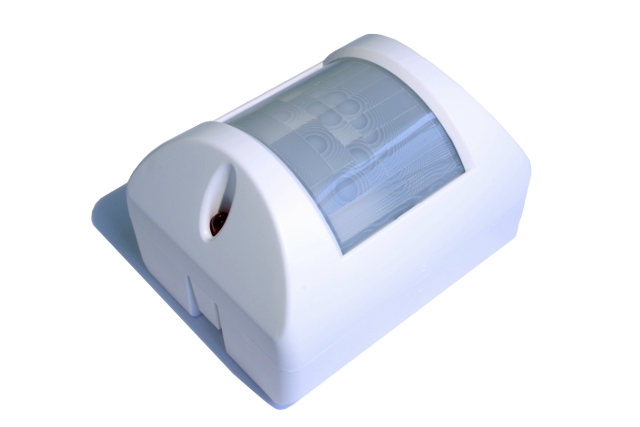
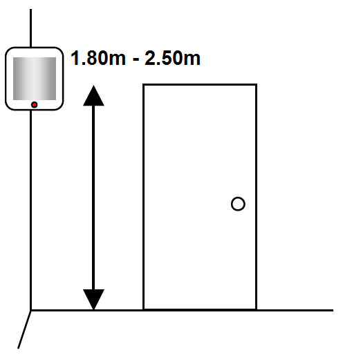

EXP_EZM-Plus
Firmware Version : 1.11 |
 |
KurzinfoS Dieses Gerät ist ein Z-Wave Sensor. Drücken Sie zum Inkludieren oder Exkludieren des Gerätes die blaue Taste an der Seite des Gerätes. Das Drücken der blauen Taste weckt das Gerät auf und hält es für 10 Minuten im Wachzustand. Weitergehende Informationen finden sich in den jeweiligen Abschnitten dieses Handbuches. |
1. Um das EZMotion zu installieren, öffnen Sie zuerst das Gerät indem Sie die beiden Gehäusehälften vorsichtig auseinanderziehen.
2. Legen Sie dann die 3 AAA Batteriene richtig herum in das Batteriefach ein.
3. Die hintere Gehäusehälfte können Sie mit doppelseitigem Klebeband oder mittels Schrauben an einer Wand befestigen. Es wird empfohlen das Gerät in einer Höhe von 1.80m bis 2.50m zu installieren.

I Im Auslieferungszustand ist das Gerät mit keinem Z-Wave-Netz verbunden. Damit es mit anderen Z-Wave Geräten kommunizieren kann, muss es in ein bestehendes Z-Wave Netz eingebunden werden. Dieser Prozess wird bei Z-Wave Inklusion genannt. Geräte können Netzwerke auch wieder verlassen. Dieser Prozess heißt bei Z-Wave Exklusion. Beide Prozesse werden von einem Controller gestartet, der dazu in einen Inklusion- bzw. Exklusion-Modus geschaltet werden muss. Das Handbuch des Controllers enthält Informationen, wie er in diese Modi zu schalten ist. Erst wenn der Controller des Z-Wave Netzes im Inclusion-Modus ist, können Geräte hinzugefügt werden. Das Verlassen des Netzes durch Exklusion führt zum Rücksetzen dieses Gerätes in den Auslieferungszustand.
Bringen Sie Ihren Z-Wave Controller in den Inklusions-/Exklusionsmodus. Das Drücken der blauen Taste bestätigt den Vorgang.
Nach dem erfolgreichen Inkludieren stoppt die LED mit Blinken, und leuchtet nur noch auf, wenn eine Bewegung wahrgenommen wird.
Der EZMotion ist ein Bewegungsmelder, der mit maximal 4 Z-Wave Gräten assoziiert werden kann. Die assoziierten Geräte können beispielsweise die Beleuchtung im Raum steuern. Mit einem Steuerzentrale können auch mittels Szenensteuerung komplexe Szenen für Beleuchtung, Multimediaanwendungen oder Raumklimatisierung ermöglicht werden. Wenn der EZMotion keine Bewegungen registriert, kann er nach einer definierbaren Verzögerung ein "AUS" Kommando z.B. für die Beleuchtung senden. Die Empfindlichkeit des Bewegungssensors kann eingestellt werden, so dass z.B. Haustiere unbemerkt bleiben oder die Empfindlichkeit sehr hoch ist.
Zusätzlich zum Bewegungssensor kann der EZMotion auch die Helligkeit und Temperatur in einem Raum messen. Der Helligkeitssensor kann so programmiert werden, dass ein Raum bei ausreichend hellem Tageslicht nicht zusätzlich beleuchtet wird. Der Temperatursensor kann beispielsweise genutzt werden, um Heizung und Kühlung in einem Raum zu steuern.
W Das Gerät ist batteriegespeist und damit in der Regel in einem Tiefschlafmodus um Strom zu sparen. Im Tiefschlafmodus kann das Gerät keine Funksignale empfangen. Daher wird ein (statischer) Controller benötigt, der netzgespeist und damit immer funkaktiv ist. Dieser Controller - zum Beispiel ein IP-Gateway - verwaltet eine Nachrichten-Mailbox für dieses batteriegespeiste Gerät, in dem Nachrichten an dieses Gerät zwischengespeichert werden. Ohne einen solchen statischen Controller wird die Nutzung dieses batteriebetriebenen Gerätes sehr schnell zur Entladung der Batterie führen oder die Nutzung ist komplett unmöglich.
Dieses Gerät weckt regelmäßig auf, meldet dies durch Aussenden einer sogenannten Wakeup-Notifikation und leert dann seine Mailbox im statischen Controller. Dafür muss bei der Inclusion die Node-ID des Controllers und ein Aufweckinterval definiert werden. Erfolgt die Inklusion durch einen statischen Controller wie zum Beispiel ein IP-Gateway, wird dieser Controller diese Konfiguration automatisch erledigen und in der Regel eine Nutzerschnittstelle anbieten, um das Aufweckinterval den Nutzerbedürfnissen anzupassen. Das Aufweckinterval ist ein Kompromiss zwischen maximaler Batterielaufzeit und minimaler Reaktionszeit des batteriegespeisten Gerätes.
Der Einfachklick auf die blaue Taste weckt das Gerät für 10 Minuten auf.
Es ist möglich die Gerätenummer 255 als Zielgerät für die Wakeup-Notifikation anzugeben. In diesem Falle wird die Nachricht als Broadcast an alle Geräte mit direkter Funkverbindung gesendet. Dem Vorteil der sofortigen Benachrichtigung steht als Nachteil gegenüber, das das Gerät gegebenenfalls mehr Zeit im aktiven Modus und damit mehr Batterieladekapazität verbraucht.
NIF Der Node Information Frame ist die Visitenkarte eines Z-Wave Gerätes. Es ist ein spezielles Datenpaket, in dem der Gerätetyp sowie die Funktionen des Gerätes bekanntgemacht werden. Inklusion und Exklusion eines Gerätes wird von diesem mit einem Node Information Frame beantwortet. Zusätzlich kann der Node Information Frame für bestimmte Konfigurationsprozesse des Z-Wave Netzes - zum Beispiel das Setzen von Assoziationen - benötigt werden.
Der Einfachklick auf die blaue Taste führt zum Aussenden eines Node Information Frame.
A Z-Wave Geräte können andere Geräte direkt steuern. Diese direkte Steuerung heißt in Z-Wave Assoziation. In den steuernden Geräten muss dazu die Geräte-ID des zu steuernden Gerätes hinterlegt werden. Dies erfolgt in sogenannten Assoziationsgruppen. Eine Assoziationsgruppe ist immer an ein Ereignis im steuernden Gerät gebunden (Tastendruck oder Auslösen eines Sensors). Bei Eintritt dieses Ereignisses wird an alle in einer Assoziationsgruppe hinterlegten Geräte ein Steuerkommando gesendet.
Assoziationsgruppen:
| 1 | Geräte, die vom Bewegungsmelder geschaltet werden (max. Anzahl Geräte: 4) |
Z-Wave Produkte können direkt nach der Inklusion im Netz verwendet werden. Durch Konfigurationseinstellungen kann das Verhalten des Gerätes jedoch noch besser an die Anforderungen der Anwendung angepasst und zusätzliche Funktionen aktiviert werden.
WICHTIG: Manche Steuerungen erlauben nur die Konfiguration von vorzeichenbehafteten Werten zwischen -128 und 127. Um erforderliche Werte zwischen 128 und 255 zu programmieren, muss der gewünschte Wert minus 256 eingegeben werden. Beispiel: um einen Parameter auf einen Wert von 200 zu setzen, müsste der Wert 200-256 = -56 eingegeben werden, wenn nur positive Werte bis 128 akzeptiert werden. Bei Werten von 2 Byte Länge wird die gleiche Logik angewandt: Werte über 32768 werden als negative Werte angegeben
| Wert | Beschreibung |
|---|---|
| 0 — 255 | (Voreingestellt 200) |
| Wert | Beschreibung |
|---|---|
| 0 — 255 | Minuten (Voreingestellt 20) |
| Wert | Beschreibung |
|---|---|
| 0 | Aus |
| 1 — 255 | An (Voreingestellt 255) |
| Wert | Beschreibung |
|---|---|
| 0 — 100 | % des maximalen Lichtes (Voreingestellt 100) |
| Wert | Beschreibung |
|---|---|
| 0 | Nein (Voreingestellt) |
| 1 — 255 | Ja |
| Wert | Beschreibung |
|---|---|
| 0 — 255 | (Voreingestellt 255) |
| Batterietyp | 3 * AAA |
| Explorer Frames | Nein |
| SDK | 4.27 |
| Geräteart | Slave with routing capabilities |
| Allgemeiner Z-Wave-Gerätetyp | Multilevel Sensor |
| Spezieller Z-Wave-Gerätetyp | Routing Multilevel Sensor |
| Router | Nein |
| FLiRS | Nein |
| Firmware Version | 1.11 |